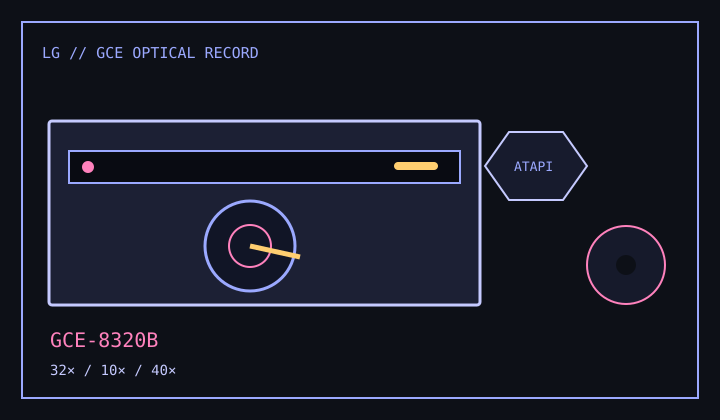

[ CD-R AND CD-RW DRIVES // IDENTIFIED MODEL ]
LG GCE-8320B
Internal E-IDE CD-R/RW recorder rated 32× CD-R write, 10× CD-RW rewrite and 40× CD read.

IDENTIFICATION: Confirm GCE-8320B on the drive label; LG GCE models with similar numbering can have different speeds and firmware.
Documented specifications
| Exact model | LG GCE-8320B |
|---|---|
| CD-R write | Up to 32× |
| CD-RW rewrite | Up to 10× |
| CD read | Up to 40× |
| Supported media | Writes CD-R and CD-RW; supports CD-ROM, CD-ROM XA, CD-Audio, Photo CD, Video CD, CD-I/FM V and compatible mixed-mode discs for reading. |
| Interface / bay | Internal Enhanced-IDE/ATAPI, half-height 5.25-inch bay. |
| Host compatibility | Requires an E-IDE/ATAPI host with a compatible optical device driver and CD recording application. Follow the manual's host/OS prerequisites; legacy writing software may not run on current OS releases. |
| Firmware / jumper | Match firmware to GCE-8320B and any OEM revision. Set MA/SL/CS at the rear jumper block according to the manual diagram and host channel; do not copy another LG drive's pin order. |
Compatibility and preservation
- Only compatible blank media and authoring modes can attain the maximum rating; verify every burn.
- Document firmware, host chipset, jumper position, disc identifier and read-back errors.
- Keep checksum-verified disc images and do not cross-flash related GCE models.
Manufacturer and manual references
- LG GCE-8320B owner's manualModel-specific speed, media and installation documentation.
- LG GCE-8320B owner's manual archiveAlternate manual copy with drive setup and jumper information.